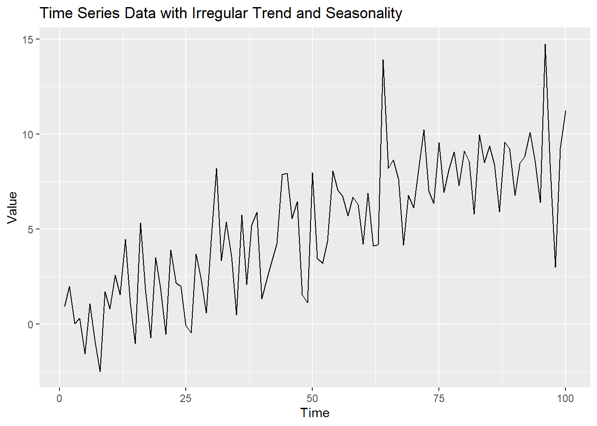
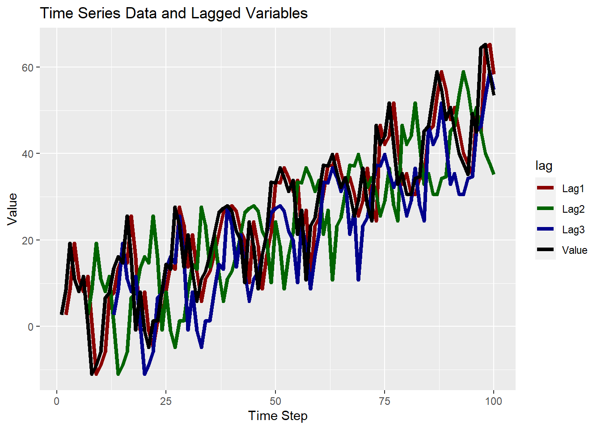

ADF Test Results:Test statistic: -4.396055 P-value: 0.01 Conclusion: The time series is stationary.정의 1 A time series is said to be stationary if its statistical properties such as mean, variance, and autocorrelation remain constant over time. In other words, a stationary time series does not exhibit any trend, seasonality, or change in statistical properties over time.
time series modeling is the process of converting from non-stationary data into stationary data.
시계열적인 특성이 없는 데이터
A stationary time series has a mean that remains constant over time, which means that the average value of the time series does not change over time. A smoothing line of moving average with a certain window should show a constant trend.
A stationary time series has a variance that remains constant over time, which means that the variability or spread of the time series data around its mean does not change over time. A moving variance with a certain window should show a constant trend.
A stationary time series has autocorrelation that remains constant over time. Autocorrelation refers to the relationship between the values of a time series at different time lags. In a stationary time series, the strength and direction of autocorrelation do not change over time.
A stationary time series does not exhibit any trend, which means that there is no systematic upward or downward movement in the mean of the time series over time.
A stationary time series does not exhibit any seasonality, which means that there are no regular, repeating patterns or cycles in the data over time.
The statistical properties of a stationary time series, such as mean, variance, and autocorrelation, do not change with time. This property allows for the use of statistical techniques and models that assume constant statistical properties over time.
ADF Test Results:Test statistic: -4.396055 P-value: 0.01 Conclusion: The time series is stationary.stationary data could have a trend and seasonality, but its period is not constant and easy to be predicted.

stationary data with an irregular trend and seasonality using a combination of a linear trend (small coefficient), sinusoidal pattern(for varying amplitude), and random noise (irregular trend and seasonality).
분석대상으로 시간 축에 대하여 분산(=정보)이 있음
A lag refers to the time interval between observations in a time series. It represents the number of time units (e.g., time periods, days, months) by which a variable is shifted or delayed in time.
정의 2 In time series analysis, a lag refers to the time interval between observations in a time series. Let \(Y_t\) denote the value of a variable at time \(t\), and \(Y_{t-k}\) denote the value of the same variable at time \(t\) lagged by \(k\) time units. The lagged value \(Y_{t-k}\) is defined as:
\[ Y_{t-k} = Y_{t-k} \] where \(k\) is the lag.
The lag can be positive, indicating a forward shift in time, or negative, indicating a backward shift in time.
For example, suppose we have a time series of daily temperature data, and we want to examine the relationship between the temperature at a given day and the temperature on the same day one week ago (i.e., \(k = 7\)). In this case, \(Y_t\) represents the temperature at time \(t\), and \(Y_{t-7}\) represents the temperature on the same day one week ago. By examining the lagged relationship between \(Y_t\) and \(Y_{t-7}\), we can analyze any patterns or trends in the temperature data over a one-week period.
Lags allow for time shifting of a time series variable, where the value of the variable at a given time step is compared to its value at a previous time step. This allows for analyzing the temporal relationship and dependencies between values of a time series over different time intervals.
Lags are used to calculate autocorrelation, which is the correlation between a time series variable and its lagged values. Autocorrelation helps in understanding the persistence or pattern of the variable over time, and can be used to detect seasonality, trends, or other patterns in the data.
Lags can be used to analyze trends in time series data. By comparing a time series variable with its lagged values, trends can be identified and analyzed to understand the direction and magnitude of changes in the variable over time.
Lags can be used to detect seasonality in time series data. By analyzing the relationship between a time series variable and its lagged values, patterns that repeat at regular intervals (e.g., daily, monthly, yearly) can be identified, indicating seasonality in the data.
Lags are used in time series forecasting models to make predictions about future values of a time series variable. By using lagged values of the variable as predictors, forecasting models can capture the historical patterns and trends in the data to make future predictions.
Lags can be used to transform time series data into a different format, such as creating lagged variables or lagged differences, which can be used in various statistical techniques for analysis, modeling, and forecasting of time series data.
| Value | Lag1 | Lag2 | Lag3 | n |
|---|---|---|---|---|
| 2.6976218 | NA | NA | NA | 1 |
| 8.5093666 | 2.6976218 | NA | NA | 2 |
| 19.2935416 | 8.5093666 | NA | NA | 3 |
| 11.0127960 | 19.2935416 | NA | NA | 4 |
| 8.1464387 | 11.0127960 | NA | NA | 5 |
| 11.5753249 | 8.1464387 | NA | NA | 6 |
| 0.8045810 | 11.5753249 | 2.697622 | NA | 7 |
| -10.9855602 | 0.8045810 | 8.509367 | NA | 8 |
| -8.9342643 | -10.9855602 | 19.293542 | NA | 9 |
| -5.8885639 | -8.9342643 | 11.012796 | NA | 10 |
| 6.6204090 | -5.8885639 | 8.146439 | NA | 11 |
| 7.7990691 | 6.6204090 | 11.575325 | NA | 12 |
| 13.5038573 | 7.7990691 | 0.804581 | 2.697622 | 13 |
| 16.2136676 | 13.5038573 | -10.985560 | 8.509367 | 14 |
| 14.7207943 | 16.2136676 | -8.934264 | 19.293542 | 15 |
| 25.5948197 | 14.7207943 | -5.888564 | 11.012796 | 16 |
| 15.9892524 | 25.5948197 | 6.620409 | 8.146439 | 17 |
| -0.8330858 | 15.9892524 | 7.799069 | 11.575325 | 18 |
| 8.0067795 | -0.8330858 | 13.503857 | 0.804581 | 19 |
| -1.0242111 | 8.0067795 | 16.213668 | -10.985560 | 20 |

Differencing is a common technique used in time series analysis to transform a non-stationary time series into a stationary time series. It involves computing the difference between consecutive observations in the time series to remove trends or seasonality, and create a stationary time series that can be easier to analyze and model.
정의 3 The differenced time series \(Y_t\) of an original time series \(X_t\) of order \(d\) can be defined as:
\(Y_t = X_t - X_{t-d}\)
where \(X_t\) is the original time series value at time \(t\), $ X_{t-d}$ is the original time series value at time \(t-d\), and \(d\) is the order of differencing.
The difference in data at a specific time interval could be used to represent time interval data such as year-on-year growth and month-on-month growth
| n | Value | Lag1 | Lag2 | Lag3 | diff1 | diff2 | diff3 |
|---|---|---|---|---|---|---|---|
| 1 | 2.698 | NA | NA | NA | NA | NA | NA |
| 2 | 8.509 | 2.698 | NA | NA | 5.812 | NA | NA |
| 3 | 19.294 | 8.509 | NA | NA | 10.784 | NA | NA |
| 4 | 11.013 | 19.294 | NA | NA | -8.281 | NA | NA |
| 5 | 8.146 | 11.013 | NA | NA | -2.866 | NA | NA |
| 6 | 11.575 | 8.146 | NA | NA | 3.429 | NA | NA |
| 7 | 0.805 | 11.575 | 2.698 | NA | -10.771 | -1.893 | NA |
| 8 | -10.986 | 0.805 | 8.509 | NA | -11.790 | -19.495 | NA |
| 9 | -8.934 | -10.986 | 19.294 | NA | 2.051 | -28.228 | NA |
| 10 | -5.889 | -8.934 | 11.013 | NA | 3.046 | -16.901 | NA |
| 11 | 6.620 | -5.889 | 8.146 | NA | 12.509 | -1.526 | NA |
| 12 | 7.799 | 6.620 | 11.575 | NA | 1.179 | -3.776 | NA |
| 13 | 13.504 | 7.799 | 0.805 | 2.698 | 5.705 | 12.699 | 10.806 |
| 14 | 16.214 | 13.504 | -10.986 | 8.509 | 2.710 | 27.199 | 7.704 |
| 15 | 14.721 | 16.214 | -8.934 | 19.294 | -1.493 | 23.655 | -4.573 |
| 16 | 25.595 | 14.721 | -5.889 | 11.013 | 10.874 | 31.483 | 14.582 |
| 17 | 15.989 | 25.595 | 6.620 | 8.146 | -9.606 | 9.369 | 7.843 |
| 18 | -0.833 | 15.989 | 7.799 | 11.575 | -16.822 | -8.632 | -12.408 |
| 19 | 8.007 | -0.833 | 13.504 | 0.805 | 8.840 | -5.497 | 7.202 |
| 20 | -1.024 | 8.007 | 16.214 | -10.986 | -9.031 | -17.238 | 9.961 |

ACF stands for autocorrelation function. ACF is a statistical tool used in time series analysis to measure the correlation between a time series and its lagged values. It helps to identify the presence of autocorrelation, which is the tendency of a time series to exhibit similar patterns or trends at different time points.
정의 4 The autocorrelation function $ (k) $ of a time series $ X_t $ at lag $ k $ can be defined as:
\[ \rho(k) = \frac{\text{Cov}(X_t, X_{t-k})}{\sqrt{\text{Var}(X_t) \cdot \text{Var}(X_{t-k})}} \]
where \(X_t\) is the value of the time series at time \(t\), \(X_{t-k}\) is the value of the time series at time \(t-k\), and \(\text{Cov}(X_t, X_{t-k})\) and \(\text{Var}(X_t)\) are the covariance and variance of the time series, respectively.
We can calculate the ACF of this time series to check for autocorrelation using R. Here’s an example code:

Autocorrelations of series 'ts_data', by lag
0 1 2 3 4 5 6 7 8 9 10 11 12
1.000 0.880 0.789 0.702 0.576 0.514 0.483 0.495 0.525 0.568 0.611 0.642 0.616
13 14 15 16 17 18 19 20
0.571 0.513 0.403 0.332 0.281 0.229 0.232 0.258 ACF has a weakness in that it can sometimes show spurious correlations due to the effect of earlier lags. This is known as the chain reaction or spillover effect. For example, if a time series has a strong autocorrelation at lag 1, it can cause subsequent lags to also exhibit autocorrelation, even if there is no true underlying relationship. To address this issue, the Partial Autocorrelation Function (PACF) was developed.
Partial Autocorrelation Function stands for PACF.
정의 5 The PACF at lag \(k\), denoted as \(\operatorname{PACF}(k)\), is defined as the autocorrelation between the original time series and its lagged values, with the effects of all shorter lags removed.
\[ \begin{align*} \text{PACF}(k) &= \phi_{kk} \\ &= \frac{\text{cov}(Y_t, Y_{t-k} | Y_{t-1}, Y_{t-2}, \ldots, Y_{1})}{\sqrt{\text{var}(Y_t | Y_{t-1}, Y_{t-2}, \ldots, Y_{1}) \cdot \text{var}(Y_{t-k} | Y_{t-1}, Y_{t-2}, \ldots, Y_{1})}} \end{align*} \]
where \(\phi_{kk}\) represents the partial autocorrelation coefficient at lag \(k\).
PACF measures the autocorrelation between the residuals of a time series after removing the effects of shorter lags. It provides a more direct measure of the linear relationship between the time series at a specific lag, while accounting for the effects of earlier lags. PACF helps to isolate the direct impact of a particular lag on the time series, without the spillover effect from earlier lags.
PACF in time series analysis measures the correlation between a time series value at a specific lag (denoted as \(k\)) and its lagged value at a previous time step (denoted as \(t−k\)), after removing the linear dependence on the intermediate lags (\(1,2,…,k−1\)).
PACF is useful in time series analysis for identifying the order of an autoregressive (AR) model, which is a common type of time series model. AR models use past values of the time series to predict future values. The PACF plot can help identify the significant lags that contribute to the prediction of the time series, and thus aid in model selection and forecasting accuracy.
ACF(1) is equaivalent to PACF(1) because there is no in-between lags and chain reaction at lag \(k = 1\)

The fitted values, denoted as \(\hat{Y}_t\), for a time series model are obtained by applying the estimated model parameters to the observed data points \(Y_t\) up to time \(t\), using the estimated model equations.
\[ \hat{Y}_t = \hat{\alpha} + \hat{\beta}_1 X_{1,t} + \hat{\beta}_2 X_{2,t} + \ldots + \hat{\beta}_p X_{p,t} \]
where \(\hat{\alpha}\) is the estimated intercept term, \(\hat{\beta}_1, \ldots, \hat{\beta}_p\) are the estimated coefficients for the explanatory variables \(X_1, X_2, \ldots, X_p\) respectively, and \(X_{1,t}, X_{2,t}, \ldots, X_{p,t}\) are the observed values of the explanatory variables at time \(t\).

As you can see the residual pattern is the same as the original data, Value when you fit the data with a linear regression. If you use the time index as the explanatory variable in a linear regression to fit a time series model, and the residuals will capture the deviations of the observed values from this linear trend. As a result, the residuals will exhibit the same pattern, since they represent the discrepancies between the observed values and the linear trend estimated from the row numbers. It’s important to note that using row numbers as the explanatory variable in a linear regression for time series analysis may not always be meaningful, as it does not take into account any underlying patterns, trends, or seasonality present in the data. It’s generally recommended to use appropriate time-related variables or other relevant explanatory variables in time series modeling to capture the inherent dynamics of the data.
정의 6 White noise is a type of time series data that is characterized by random, uncorrelated, and identically distributed (i.i.d.) values. \[ Y_t \sim \operatorname{WN}(0,\sigma^2) \]
where
\[ \begin{align*} X_t & : \text{The value of the white noise at time t} \\ \text{WN} & : \text{Indicates that the data follows a white noise process} \\ 0 & : \text{The mean of the white noise process, which is typically assumed to be 0} \\ \sigma^2 & : \text{The variance of the white noise process, which determines the spread of the random values} \end{align*} \]
It is often used as a reference or benchmark series to compare against other time series data for identifying patterns or structures.
The Ljung-Box test is a statistical test used to assess whether a time series data exhibits significant autocorrelation at different lags. The null hypothesis (\(H_0\)) of the Ljung-Box test is that there is no autocorrelation in the time series data up to a certain lag, while the alternative hypothesis (\(H_a\)) is that there is significant autocorrelation present. It is used to assess the goodness-of-fit of a model by testing whether the autocorrelation coefficients of the residuals (or errors) of the model are significantly different from zero.
\[ Q(m) = n(n+2) \sum_{k=1}^{m} \frac{\hat{\rho}_k^2}{n-k} \sim \chi^2_{1-\alpha,h} \]
where: - \(Q(m)\) is the Ljung-Box test statistic for a given maximum lag \(m\) - \(n\) is the sample size of the time series data - \(\hat{\rho}_k\) is the sample autocorrelation at lag \(k\) - Under \(H_0\), \(Q(m)\) assymptotically follows a \(\chi^2_{1-\alpha,h}\) - \(h\) is the number of lags being tested
Suppose we have a time series data vector \(x\) of length \(n\), and we want to perform a Ljung-Box test up to a maximum lag of \(m\).
The Q statistic follows a chi-squared distribution with degrees of freedom equal to the number of autocorrelation coefficients being tested. The p-value associated with the Q statistic can be compared to a chosen significance level (e.g., 0.05) to determine if the residuals exhibit significant autocorrelation. If the p-value is below the chosen significance level, it suggests that the model may have inadequate fit and that there may be remaining autocorrelation in the residuals.
The Box-Pierce test is a modified version of the Ljung-Box test, \[ Q(m) = n \sum_{k=1}^{m} \hat{\rho}_k^2 \]
Ljung-Box test incorporates the sample size \(n\) in the denominator. This makes the Ljung-Box test more appropriate for small sample sizes, while the Box-Pierce test is suitable for larger sample sizes.
A classic example of white noise is a series of random numbers generated from a standard normal distribution, where each value in the series is independent and identically distributed with mean 0 and variance 1.


Ljung-Box test
data: Residuals
Q* = 5.6107, df = 10, p-value = 0.8468
Model df: 0. Total lags used: 10The characteristics of time series data has trend, seasonality, and autocorrelation. To check if autocorrelation exists in data, we used ACF and PACF. Then, how to check the trend and seasonality characteristics? Time series decomposition can be used to check them.
The observed time series \(y_t\) can be decomposed into four components: the trend component \(T_t\), the seasonal component \(S_t\), the cyclical component \(C_t\), and the remainder or error component \(E_t\). This can be expressed as:
\[ \begin{equation} y_t = T_t + S_t + C_t + E_t, \quad \text{where} \quad E_t \sim \text{WN}(0,\sigma^2), \end{equation} \]
where \(T_t\) is the trend component, \(S_t\) is the seasonal component, \(C_t\) is the cyclical component, and \(E_t\) is the error term, which is a random variable with a white noise distribution with mean 0 and variance \(\sigma^2\).
The trend component \(T_t\) represents the long-term behavior of the time series, and can be either deterministic or stochastic. The seasonal component \(S_t\) represents the regular and repeated variations that occur within a single year or other fixed time period. The cyclical component \(C_t\) represents the irregular variations in the time series that do not follow a fixed pattern.
Deterministic refers to a situation where the outcome is completely determined by the initial conditions, and there is no randomness involved. For example, if you drop a ball from a certain height, the time it takes to hit the ground can be determined exactly based on the initial height and the acceleration due to gravity. This is a deterministic process because there is no randomness involved.
Stochastic, on the other hand, refers to a situation where the outcome is uncertain and subject to randomness. For example, if you roll a fair six-sided die, you cannot predict with certainty what number will come up. The outcome is determined by chance, and is therefore stochastic.
There are two ways of decomposing time series data: additive decomposition and multiplicative decomposition This additive deomoposition method is suitable for the time series data with a constant variation of seasonality according the trend, while multiplicative decomposition is suitable for the time series data with a inconsistent variation of seasonality according the trend. The variation magnitude could increase or decrease.
A common method for decomposing time series is the additive decomposition, which can be expressed as: \[ \begin{equation} y_t = T_t + S_t + E_t. \end{equation} \]
The trend component \(T_t\) is estimated by smoothing the data using techniques such as moving averages or exponential smoothing. The seasonal component \(S_t\) is estimated by computing the seasonal indices, which are ratios of the observed values to the estimated trend component. The cyclical component \(C_t\) is usually not explicitly estimated, but can be identified as the fluctuations that remain after removing the trend and seasonal components.
For example, let \(X_t\) be a quarterly time series of sales data for a company, with \(t\) ranging from 1 to 20. We can decompose the time series using an additive model:
\[ \begin{equation} X_t = T_t + S_t + E_t, \end{equation} \]
where \(T_t\) is the trend component, \(S_t\) is the seasonal component, and \(E_t\) is the error term. The trend component can be estimated using a 3-period moving average: \[ \begin{equation} T_t = \frac{1}{3} (X_{t-1} + X_t + X_{t+1}), \end{equation} \]
where \(t=2,3,\ldots,19\). The seasonal component can be estimated by computing the average value of \(X_t\) for each quarter:
\[ \begin{equation} S_t = \frac{1}{5} \sum_{i=0}^3 X_{t+4i}. \end{equation} \]
Finally, the error term \(E_t\) can be computed as:
\[ \begin{equation} E_t = X_t - T_t - S_t. \end{equation} \]
This decomposition allows us to separate the long-term trend, seasonal patterns, and irregular fluctuations in the sales data, and can help us identify any underlying patterns or trends that may be present in the data.
Subscribe
Enjoy this blog? Get notified of new posts by email: